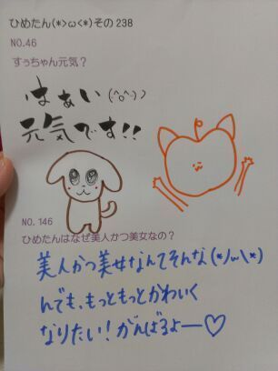

| 2013/03 04 Mon | ひめたん大図鑑42(2012年3 月) |
ひめたん大図鑑とは何か。
それは、ひめたんが受験とかテストとか
テストとかテストでちょーっと日記書く時間がないぞーって時に登場する、
いわゆる「過去の質問返しをまとめたもの」って感じかな。
過去なので時制とかおかしなことになる質問も中にはあるかもだけど、
ま、そゆことなんでね(*^^*)
874
 ひめたんは家族に会えんはときやっぱりホームシックになるかな?
ひめたんは家族に会えんはときやっぱりホームシックになるかな?
そんなときはどうやって寂しさまぎらわしてる?
去年の冬とかはまさにホームシックだったよー(\'・ω・`)
それでもメンバーのみんながいたから寂しくなかったけど...
実は今は家族と住んでるからホームシックとかは大丈夫なの!
ホームよりも、お友達に会えないのは辛いかなー(\'`;)
そんなときはすぐに連絡しますよ♪
875
ひめたんが今一番欲しい物は何ですか?(≧∀≦)
最近お引っ越ししてきたから、可愛い小物とか集めるの好きですよ(^ω^)
あとジャッキーちゃんグッズも!棚がおもちゃ箱みたいになってんの!
876
ディズニーキャラクターの中では何が好き?ドナルドかわいくないですか!?
ディズニーキャラクターはみんな可愛い!
ドナルドもかわいいよねー(*/ω＼*)
半年前のひめたんの夢はアナウンサーさんか
ディズニーランドのお姉さんになることだったの!
今でも諦めてないよっ?
ひめたん的にはカトリーベアちゃんとか好きかな(ω)♪
877
もう東京でオススメの店とか見つけた??
ということで
昨日行ったお店が美味しかったから、お店の名前書いておくね(ω)☆
TIME512
スペイン料理屋さんって!
雰囲気がおしゃれな感じ♪
テラスで食べるもよし、店内で音楽を聴きながら食べるもよし!
公園とか六本木ヒルズとか、景色がきれいだったよ(*゜`)
878
朶坂←この書き方どう思います?
すごいね乃と木がくっついたら「朶」ってなっちゃうんだねー(^^)
読み方は「ださか」?
いやいや「のぎざか」♪
879
寝ちゃいけないときに眠くなったらどうする?
授業中だったら寝ちゃうっ
∩^ω^∩
あららだめね中3なのに。
んでも中1中2の時は意地でも目を覚まさなきゃと思って
ひたすら目薬さしてたかな!
だからいっつも瞳がきらきらしてた(^^)わら
880
弓道部ってどう思う?
弓道いいよね(*\'`*)
ひめたんの中学校には弓道部なかったから
「高校行ったら弓道したい!」って子何人かおったよ。
...てか。
(*\'`*)←この子にハマってしまった。可愛いいい!
881
ひめたん100ブログからのコメント参加だけどいいですか??
882
応援しても迷惑じゃない?
ありがとうございます!
大歓迎よお(`・ω・\')
迷惑とかないないっむしろ嬉しいです♪
883
志望していた高校は都内の高校かな?
ぴんぽんその通り!
884
広島弁でコメントされるのは嬉しいですか?
嬉しいし、なんかほっこりしますよ(*\'`*)
最近はままと妹とまあや(和田まあやchan)くらいからしか
広島弁聞かないからね♪
885
マクドナルドでは何を食べる?
そういや最近マック行ってなーい!
頼むならチーズバーガーのピクルス抜き☆秋限定の月見チーズバーガーも好き♪
バーガーってピクルス抜きがオーダーできるらしいですよ?
886
中学校生活で1番の思いではなーに?☆
中2の修学旅行と
中3の合唱祭!
それから部活で全国大会行ったのもいい経験だったかな。
放送部にだって全国大会があるんです(`・ω・)どや!
887
中学最大のイベントの修学旅行はどこ行きましたか(*\'x`*)?
東京!
都庁、東京タワー、ディズニーランドなどなど2泊3日でいろんなところ行きました(^ω^)
888
好きなブランドとかありますか?リズリサとか好きですか?
あとどういう服装をよくしますか?(*・ω・*)
LISLISA、INGNI、Honeysとか好き!
んでも固定のブランドばっかり着るよりも
いろんなお店に行ってみて「可愛いっ!」て思ったのを着てるかな。
着るならワンピが多い。だって楽なんだもん!
889
学校生活で委員会とかクラスリーダーなどのリーダー系になったことある??
中学校3年間生活委員つとめましたよ(`・・)ゝ
でも学級委員はしません。ちょい役かもん♪
890
ひめたんはシャンプー何使ってる?
今はMACHERIE!
確かななせまる(西野七瀬chan)るんるん(齊藤ちはるchan)と一緒だったと思う♪
891
誰かの第2ボタンもらった?wもしいらないならあげるよ(笑)
ひめたんの学校はね、ボタンはみんな後輩にあげるの。
し、ひめたんにくれるような人おらんしね(\'・ω・`)
え?くれるのっ?
いこまっち(生駒里奈chan)じゃなくてちま(樋口日奈chan)じゃなくて
ひめたんにくれるの?わら
あそうだ。
ちまはほんと女の子なの。
いっつもソーイングセット持ち歩いてるんだよ(ω)??
尊敬するねー。
ひめたんもソーイングセット持ち歩こっかなって一瞬思ったんだけど諦めました。
だって持ち歩いたところで裁縫なんてできんもんっ!
892
個別の時ヨッシーのモノマネお願いしても?いい
明日まいまい(深川麻衣chan)に許可取ってみるみる。
あクオリティの保証はしませんのでご了承くださいな('・ω・`)*わら

(＊´・ω・＊)
コメント(133)
2013/03/04 23:42